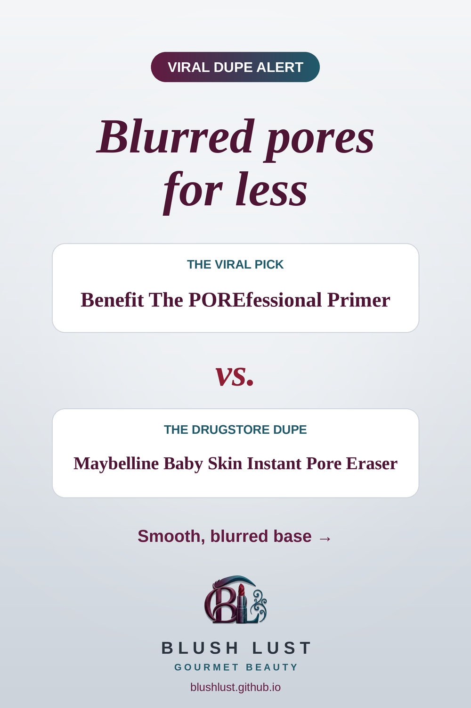

The pore-blurring primer, for less
A silky primer that softens the look of pores and fine lines for a smooth base.
This post contains affiliate links. If you buy through them, we may earn a small commission at no extra cost to you. As an Amazon Associate I earn from qualifying purchases.
Maybelline Baby Skin Instant Pore Eraser
The viral pickBenefit The POREfessional Primer
vs.
The dupeMaybelline Baby Skin Instant Pore Eraser

Comparisons reflect what beauty shoppers commonly say, not lab testing. Shades and formulas vary — check reviews before you buy.